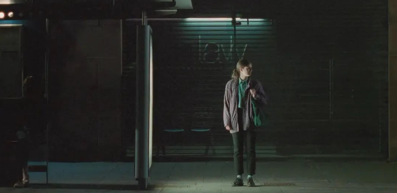

这篇文章，只是一些日常生活的神游，一些进入过脑海的东西，以及一些想要跑出来的东西。
巨兽与人的境况
在一家巨型书店买了《巨兽：工厂与现代世界的形成》这本研究巨型工厂历史的书。弗里曼从百年前的英国到如今的中国，盘点起世界各地巨型工厂的兴衰，也直叙了这些“巨兽”所带来的物质景观与意识形态的影响。看这本书的过程里，我脑海中浮现了儿时居住的沪郊工业区与曾途经的“眼镜之都”、“纽扣之乡”等工业集约地，对巨型工厂的前世今生串起了一条脉络，也仍觉得还应继续思索其所造就的“人的境况”。
城市的贫困常常可以描绘成另一种形式的掠夺和堕落。泰勒写道：“工厂制度最显著的现象是突然在某些点上大量聚集的人口。”英国的棉纺织工业发展起端的时候，机械化使工厂所在地区的人口大量增加，当劳动力不足，女孩子们也被工厂从家里引诱出来打工，工厂附近迅速出现了密集的工业阶级社区。这令人想到了如今的杭州余杭区或深圳南山区。只不过，如今与当时不同的是：
当时的工人们是令人不安的份子，他们没有接受过多少规训，几乎无法无天，而今天互联网大厂里，几乎都是已经接受过较为成熟的规训而聚集在一起的工人们。英国早期工人阶级生活悲惨，他们的衣服破旧，生活的家和街区充斥着恶臭气味。而今天互联网大厂的工人们穿着动辄千元万元的品牌衣服，生活的家和街区充斥着的是奶茶或咖啡的气味。
在泰勒和恩格斯看来，大量工人集中在工厂和工厂附近，最重要的影响是创造了一个新的社会形态，一个“通过引进机械而产生的无产阶级”。那么如今则是形成了一个“通过引进科技而产生的无产阶级”吧。“蒸汽动力+棉纺厂=新的工人阶级”，对于当下，不正是“信息技术+互联网大厂=新的工人阶级”？
1849年，恩格斯重返曼彻斯特，在为《英国工人阶级状况》一书在此地做调研的七年之后，他发现曼彻斯特变成了一个非常不同的城市，它更加繁荣与和平——英国无产阶级，实际上正在变得越来越资产阶级化。
当下的国内社会，似乎也是这样。
过去的几十年，发展过快，导致社会中各种阶级很混乱，存在巨富，也存在赤贫。而社交网络的主流话语，掌握在混乱的阶级中。
自以为是新中产阶级的群体，虽然成长，但是并未形成坚实的政治力量，文化资本亦为脆弱，并不享受着长久的确定性。仅仅是作为功绩社会中的一块砖瓦，在政治中妥协懦弱，在商业中虚张声势。
“现代的巨型工厂，并不代表着人类精神力量的蓬勃发展，而似乎常常象征着它的衰落。”
把握边界的练习
我曾听过这样一句话：你很难同时拥有青春与对青春的感悟，大概就是当局者迷的意思，当缺乏具身体会时，外界的话语、文本，都很难介入你。
近两年因为了解到这一点，我在反思家庭关系的过程中，抛弃了想要“管教”的自私冲动，选择与家人保持距离，以避免关系的张力对自身的伤害，也践行一种“即使是亲人，也不应该利用自己在家庭内部的权力位置去施加压迫与暴力”的生活方式。
我有意识地避免把自己的价值判断暴力输出给弟弟，并且细数在我俩成长过程中的那些剑拔弩张的时刻，是带着怎样的隐秘心理。虽然曾对弟弟也有过几次提醒，让他多读些书，但并不抱什么大希望。
令人意外的是，最近两个月，弟弟发生了一些转变——开始阅读、学习、抛出疑问，主动寻求对话。在我看来，这似乎是一种“智识启蒙”的开端。我们的对话内容，开始往社会学与哲学相关的问题发展。对此，我有惊喜，也有疑虑。
惊喜，在于此前从来没想过会与家人交流“洞穴隐喻”、“西西弗神话”之类的这些话题。
疑虑，在于如何平衡自己与原生家庭成员的关系，时至今日是保持距离地观察，还是走近关系的场域去体验？前者可以尽量避免冲击，后者会创造一种陌生的互动模式。
这种陌生的互动模式，最核心的问题便是如何把握交流的尺度，避免说教式的对话？我想这是当前的自己需要练习的。
因为把控尺度这件事，太多人都从未学习过，我们所生活的环境是：家长们过度干预孩子的生活——催婚催生催考学，老板们过度干预员工的非工作时间——加班加点996等。似乎尊重他人自由的尺度，保持合理的边界，一直以来就是很陌生的事情，以至于我们常常对入侵他人领域的行为毫无自知。学习并练习尊重与边界感，是我们太多人都要自修的一堂课。
文本与现实的距离
偶尔会与友人聊起一些女性主义观点，而那些观点的表述，常常引起疑问，于是我便需要对概念做出解释，最好再举出一些例子来佐证，最终这种对话常常以推荐书籍结尾。当然，对方大概率不会真的记下书目名字，不一定会真的去阅读。而我若是再去追踪，也是有点强人所难，自讨没趣。
渐渐地，我意识到自己及我所熟悉的一些朋友所学习的女性主义更多的是一种舶来品，从沃斯通克拉夫特、波伏娃、伍尔夫、上野千鹤子等处舶来，这种性别认知其实在国内的历史中是缺少出处的，不是原生的文化氛围或意识形态。而中国二十世纪前半叶乃至八九十年代涌现的女性文学作品，也仍然属于小众阅读。文本理论的距离，父权社会的贬抑力量，隐形的学习成本，这些都对女性主义的传播形成了阻力。因此，太多太多女性仍然对女性主义十分陌生。

如今学者的工作越来越成为专业化的知识生产，鲜少能与广泛的社会实践与大众传播进行交互，这带来了知识传播的高门槛。而若是依赖喧嚣的社交网络中的所谓博主来科普，对于读者、学习者来说存在一定的选择成本，一不小心就会被偏激而有局限性的观点带偏。不得不说，知识的话语过度理论化、学术化，文本理论与混沌现实的差异，这些都令我在日常生活中对“对话”感到吃力。
- 吃力在于，有满脑子想法想要吐露，面对身边的亲友，却难以转化为通俗易懂的话语去交流。
- 吃力在于，有很多想要分享的作品，常常缺少探讨的对象。
- 吃力在于，看得到知识与媒介之间的矛盾，并认识到个体难以弥合这沟壑。
如何顺畅地与未经相似训练过的人们对话，是我的一个长期课题。我也认识到更严峻的是，对于一个女性来说，如果没有女性身份的“自觉”（我将这种“自觉”理解为：开始思考女性意味着什么，其是怎样被塑造出来的，对于女性的生命与性别分工，产生问题意识与讨论意识），那么其实很难通过简短的对话进入这条觉醒的河流。所以啊，“自觉”与“对话”，同样重要，只是“自觉”这件事是他人无法左右的。
结语
可能是由于过去三年自律的反噬，我正在度过一段将进步主义从自己身上缓慢剥离的生活。面对世界的无常与失控，面对加利福尼亚并不一定会有遍地的葡萄园，面对一切并不会变得越来越好的现实，允许自己不做一个在滚轮上奔跑的仓鼠，允许自己有喘气的空间。
迎接着凉爽的黑夜，忍耐着闷热的白天，继续神游。